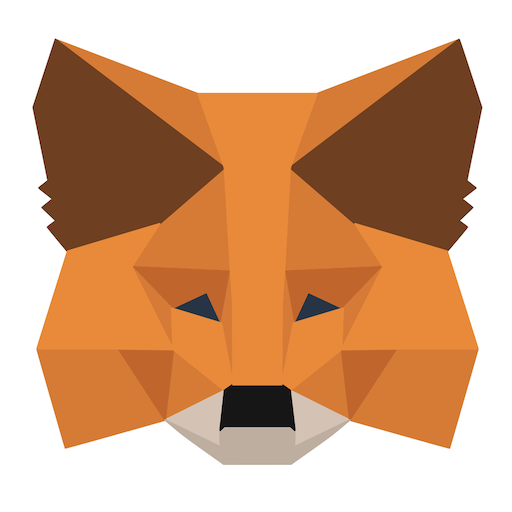

Getting Started
The official token of the DRIP Network is DRIP (BEP-20) on the Binance Smart Blockchain (BSC). It captures value by being scarce, deflationary, censorship resistant, and by being built on a robust, truly decentralized blockchain..
Setup
This is what I call my “App Stack”. These three apps will primarily control the flow of capital. Download the following apps:
- Crypto.com
- MetaMask 
- DUO

Create a Crypto.com Account:
- Go through the steps as seen on the on the screen
- Setup 2-Factor Authentication
- Go to Settings in the top left of the crypto.com app
- 2-Factor Authentication
- Enable 2FA
- Copy code
- Open DUO
- Click on Add + to add an account
- Scroll down to “Add other account”
- Paste your code
- Go back to crypto.com app and click Proceed to Verify
- This ^ will generate a new 6-digit passcode in the DUO app
- Switch to DUO, and copy the 6-digit passcode
- Switch back to crypto.com, paste it, and click Enable 2FA
Create a MetaMask Wallet
Open MetaMask and click Get Started
Click on “Create a Wallet” and on the next window click on “I agree” if you would like to help improve MetaMask or click on “No Thanks” to proceed.
Create a strong password for your wallet.
SUPER IMPORTANT: Securely store the seed phrase for your wallet
- Click on “Click here to reveal secret words” to show the seed phrase.
- MetaMask requires that you store your seed phrase in a safe place. It is the only way to recover your funds should your device crash or your browser reset. I recommend you document it in some way and store it in a secure place.
Click Next
Seed phrase confirmation
Confirm your secret backup phrase by clicking on each word in the order in which the words were presented on the previous screen. Click on “Confirm” to proceed.
You should see “Congratulations!” now.
Add Binance Smart Chain to MetaMask Wallet
- Open MetaMask
- Open the side bar menu (top left)
- Click Settings
- Click Networks
- Add Network and enter the info below
- Network Name: Smart Chain
- New RPC URL: https://bsc-dataseed.binance.org/
- ChainID: 56
- Symbol: BNB
- Block Explorer URL: https://bscscan.com
Connect Crypto.com to MetaMask
- Open crypto.com
- Go to Track and search for “BNB” (Binance Coin)
- Click Buy BNB
- You’ll need to Add a Credit or Debit Card
- Go through the steps required to do this. You may need to have your online banking app ready as it may send a small transaction to your card with a special code you need to extract from it.
- Enter the amount of BNB you wish to acquire
- For example, right now I can purchase 1.5 BNB for $566.39
- After buying BNB, go to Accounts (bottom menu)
- Click on the Crypto Wallet dropdown and select Binance Coin
- Click Transfer, then Withdraw
- Click External Wallet
- Click the ‘+’ at the top right
- Click Wallet Address
- IMPORTANT: Switch network to BSC
- You’ll need to add your MetaMask Wallet address in the BNB Wallet Address section
- Go back to MetaMask
- Copy address (right above the send button)
- Go back to the crypto.com app and paste it in the BNB Wallet Address section
- Add a wallet name
- Click Continue. This could take time to add a new address.
- Once wallet is added, click Withdraw BNB
- Enter amount of BNB to transfer to MetaMask (This is the amount you want to use to purchase DRIP).
- Click Withdraw
- It’ll ask you to get the 6-digit code from your DUO app. Go to DUO and copy it. Come back to crypto.com and paste it.
- Done.
BUY DRIP
- Open MetaMask
- Open the sidebar menu
- Click on Browser
- Search “drip.community”
- Open the menu on the top right and make sure you’re on the Swap tab
- Go to the Buy DRIP section
- Enter in almost all of your BNB. You’ll need to save some for gas fees (~$10)
- Click BUY
- Switch tab to the Faucet
- Go to the “Get a Buddy” Section
- Add 0x77822313a6a898A04d99ea43656507fc5D8c20dd
- Go to the Deposit section
- Click Max
- Click DEPOSIT
- A new window will pop up with MetaMask asking you to confirm gas fees. Click Confirm. If it says insufficient funds, you’ll need to add more BNB to your MetaMask Wallet. This doesn’t take much as each transaction is around or under $1
- Done!!
Strategy For now, simply click the hydrate button each day around the same time. Do this within the metamask app, under the browser tab just like we did to buy DRIP.